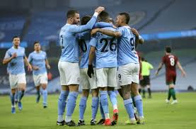

미드필더로는 가장 유명하고 현존 원탑인 덕배, 항상 꾸준히 잘해주는 귄도안, 안정감있는 페 르난지뉴와 로드리가 있다. 이들이 있기에 20-21시즌 리그우승, 챔스 준우승, 컵대회우승을 이룰 수 있었다.
펩의 지도아래하 이들은 패스앤무브가 뛰어나고 공간에 대한 이해력, 압박의 강도가 뛰어난 선수들이다. 매 경기마다 중원장앙력이 상대보다 강하다. 챔스결승인 첼시와의 경기에서는 캉테와 첼시의 선수비 후 빠른역습에 의해 패배했지만 여전히 세계최고라고 생각한다.
